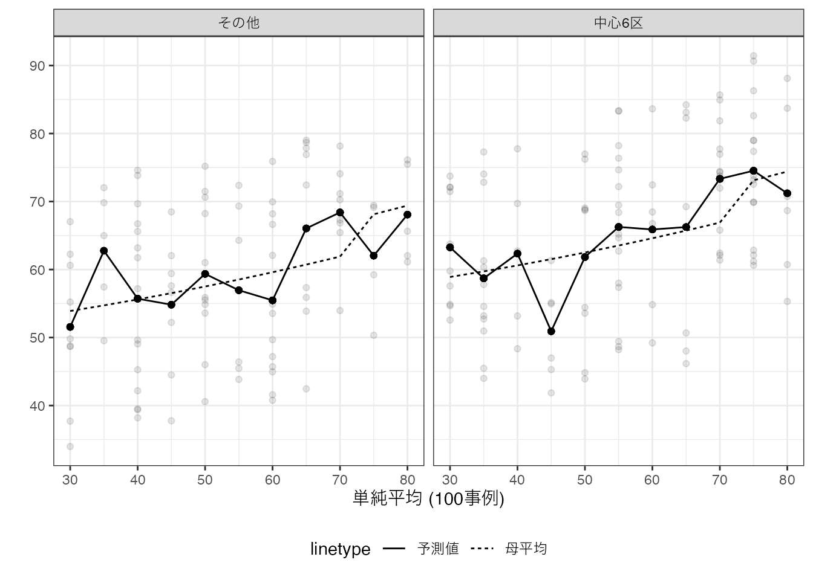
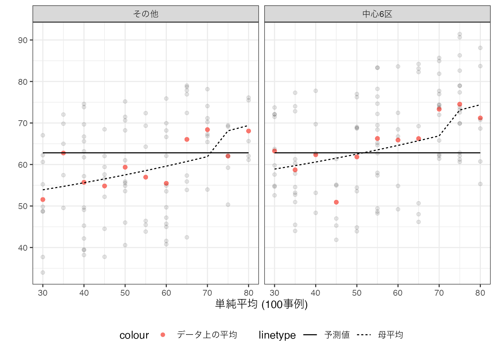
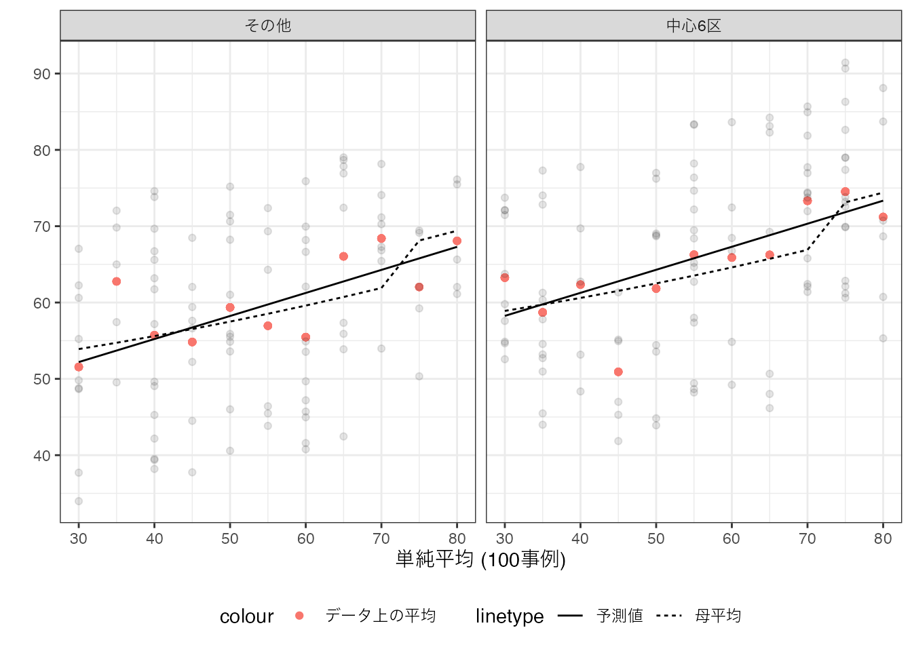

4 予測を目的とする要約
予測を目的とするでは、意思決定に必要だが欠損している情報 \(Y\) を予測するモデル（予測モデル）の推定を目指します。 観察できる変数 \(X\) から予測するモデルを構築することを目的とします。 以下のような例があげられます。
視聴履歴やいいね数 \((X) \underbrace{\rightarrow}_{予測モデル}\) 好む未視聴動画 \((Y)\)
メールの文名や件名 \((X) \underbrace{\rightarrow}_{予測モデル}\) 迷惑メール \((Y)\)
事業の内容や財務状況 \((X) \underbrace{\rightarrow}_{予測モデル}\) デフォルトリスク \((Y)\)
もし\(Y,X\) が共に観察できるデータを活用できれば、推定方法がある程度確立されています。 ここでは機械学習の一分野である、教師付き学習を紹介します。
4.1 推定目標
本ノートでは、データと同じ母集団から新たに抽出された事例を、予測するモデルの推定を目指します。 予測能力は、平均事情誤差で測定します \[母集団における平均二乗誤差 = (Y - 予測値)^2 の母集団における平均\]。 注意が必要なのは、母集団における平均二乗誤差は、母集団上の値であり、直接観察することは不可能です。 ただし以下では、推定することは可能であることを論じます。
4.1.1 完璧な予測モデル
予測研究において、究極的な目標の一つは、 \(Y\) を完璧に予測するモデルの推定でしょう。 しかしながら多くの応用で、この目標には到達することができません。 予測モデルは、ある\(X\)の組み合わせについて、一つの予測値のみを出力します。 このため母集団において、同じ\(X\) 内で\(Y\) の値にばらつきがあれば、予測が外れる事例は必ず存在します。 この問題を解決するためには、\(Y\)の全ての決定要因を\(X\)として観察し、\(X\)内での個人差をなくす必要があります。 特に人間行動や社会的な事象などについては、無数の\(X\)が存在し、その多くは観察が難しいと考えられます。 結果、完璧な予測は不可能と言っていいと思います。
4.1.2 理想の予測モデル
最も高い予測性能 (母集団における平均二乗誤差が最小化)を達成する予測モデルは、母平均であることが証明できます \[理想の予測モデル = X内でのYの母平均\]。
予測研究においては、データから推定した予測モデルを理想の予想モデルである母平均に極力近づけることが、実質的な目標となります。 具体的には以下の推定誤差を極力削減することを目指します \[(\underbrace{X内でのYの母平均}_{理想の予測モデル}-予測モデル)^2の母平均\]
4.2 推定方法
手元のデータから、母平均を推定するため方法として、二つの極端な方法を紹介し、その中間的な方法として線型モデルを最小二乗法(OLS)で紹介するアプローチ、およびその発展として罰則付き回帰 (ここではLASSO)を紹介します。
4.2.1 learning by memorization (丸暗記法)
データ上の\(Y\)の平均値も、予測モデルを推定する方法であり、learning by memorizationとも呼ばれます。 この方法は、\(X\) の各組み合わせについて、十分な事例数があれば、実用的な方法です。 しかしながらほとんどの応用で、事例数の少ない \(X\) の組み合わせが存在します。 このようなデータについては、母平均からかけ離れた予測値が推定されてしまいます。
数値例は以下となります。
点線が母平均、実線が丸暗記法が生み出した予測値となります。 母平均と予測値が、大きく乖離するグループが散見されます。 このような乖離は、データが母平均よりも上振れ/下振れしたケースにおいて、見られることも確認できます。
4.2.2 単純平均
少数事例の要約を避けるためには、より”荒い”要約が必要となります。 最も極端な方法は、\(Y\) のデータ全体での単純平均を予測値とする方法です。
数値例は以下です。

丸暗記法に比べて、予測モデルが単純化されています。 多くの事例が集計できているため、研究者間での予測値のばらつきが大きく減少しています。 ただし\(X\) と \(Y\) の母平均との間での関係性を一切無視した集計になっており、母平均との乖離が生じています。
4.2.3 OLS
丸暗記法は、複雑なモデルの推定を試みており、母平均から乖離した事例の影響を受けやすくなっています。 単純平均法は、単純すぎるモデルの推定を行なっており、母平均の特徴の多くを無視しています。 このため、多くの応用で、丸暗記法と単純平均の中間的なモデルの推定が試みられます1。
単純平均と丸暗記ほうの中間的なモデルを推定する代表的な方法は、線型モデルを最小二乗法 (OLS) で推定する方法です。
4.2.3.1 \(Y\sim Size\)
最もシンプルな線型モデルとして、例えば以下を推定してみます。 \[予測値 = \beta_0 + \beta_1\times District\] \(\beta_0,\beta_1\) は、以下のデータ上の平均二乗誤差を最小化するように推定します。\[(Y - 予測値)^2 のデータ上の平均\]
推定結果を図示すると、以下となります。

単純平均とは異なり、中心６区の物件は、平均取引価格が高くなる傾向を捉えるモデルが推定されています。 丸暗記法と比べると、分析者間での予測値のばらつきが減少しています。 これは、丸暗記法と比べて、事例の要約が機能していることを表しています。
しかしながら母平均に比べると、以前単純すぎます。 特にSizeに応じて、平均価格が異なるという性質を捉えきれていません。 言い換えると単純平均に近すぎるモデルになっています。
4.2.3.2 \(Y\sim Size + District\)
Districtと平均取引価格の関係性を捉えるために、以下のモデルの推定を試みます。 \[予測値 = \beta_0 + \beta_1\times Size + \beta_2\times District\] \(District\) は、中心６区に立地していれば1、それ以外では0を取ります。 \(\beta_0,..,\beta_2\) は引き続き、データへの適合度を最大化するように推定できます。
推定結果を図示すると、以下となります。

全ての分析者について、中心6区の方が平均取引価格が高いという性質を上手く捉えています。 しかしながら、Sizeが70平米を超えると、取引価格が一段上昇するという性質は捉えきれていません。
4.2.3.3 \(Y\sim (Size + Size^2 + .. + Size^6) * District\)
母平均が持つ複雑な性質を捉えるために、交差効果と高次項を導入し、さらに複雑なモデルを推定してみます。 \[予測値 = \beta_0 + \beta_1 Size+\beta_7District + \underbrace{\beta_2Size^2 +..+\beta_6Size^6}_{高次項}\] \[+\underbrace{\beta_8 Size\times District +..+\beta_{14}Size^6\times District}_{交差効果}\] このような複雑なモデルであったとしても、データへの適合度を最大化するように推定できます。 ただし、複雑すぎると母平均から乖離してしまいます。

複雑なモデルを最小二乗法で推定すると、よりデータへの適合度を改善し、データ上の平均値に近づけることができます。 このことは、必ずしも望ましいとはいえません。 なぜならば、丸暗記法により推定されたモデルに近づくからです。 すなわち少数の事例しかない\(X\)の組み合わせについては、丸暗記法と同様に母平均から乖離し、予測性能が悪化します。
線型モデルを複雑にしすぎると丸暗記モデルになり、単純化しすぎると単純平均モデルとなります。 この中間的なモデルが予測性能が高いことが多いですが、分析者がそのようなモデルを適切に設定することは困難です。 機械学習では、この問題に対して、データに基づく解決策を提案しています。
4.2.4 LASSO
適切な単純さをもつモデルを推定する方法として、LASSOを紹介します。 LASSOは、罰則付き回帰と呼ばれる枠組みの一つの手法です。 OLSと同様に線型予測モデルを推定しますが、データへの当てはまりだけでなく、モデルの複雑性も抑制することも目指します。
例えば、以下のモデルを推定します。\[予測値 = \beta_0 + \beta_1 Size+\beta_7District + \underbrace{\beta_2Size^2 +..+\beta_6Size^6}_{高次項}\] \[+\underbrace{\beta_8 Size\times District +..+\beta_{14}Size^6\times District}_{交差効果}\] \(\beta\) の値は、以下を最小化するように決定します。 \[(Y - 予測値)^2 のデータ上の平均\] \[+ \underbrace{\lambda}_{Tunning\ Parameter} (\beta_1の絶対値 +..)\] \(\lambda\) は、データへの当てはまりではなく、モデルの予測性能を高めるように決定します。 具体的には、交差検証を用いる方法、情報基準などの理論的な評価指標を用いる方法があります。
Note
\(\lambda\) は、\(\beta\) と異なり、データへの当てはまりを最大化するように決定できません。 なぜでしょうか？
\(\lambda\) に応じて、予測モデルがどのように変化するのか考えてみます。 \(\lambda\) を変化させることで、予測モデルは、単純平均と丸暗記の間で変化することになります。 \(\lambda=0\) であれば、OLSと全く同じモデルを推定します。 よって、複雑な線型モデルを推定した場合は丸暗記モデルに近いモデルとなります。 \(\lambda\) を非常に大きい値を設定した場合、\(\beta_1=\beta_2=..= 0\) となります。 この場合は\(\beta_0\)をデータに当てはまるように推定することになり、単純平均と一致します。

分析者1と3については、DistrictとSizeについて、直線のモデルが推定されています。 分析者2,4については、District共通の予測値が推定されています。
以上から全ての分析者について、モデルが単純化されていることが確認できます。 ただし単純化の方法は、かなり異なっており、データに強く依存していることが確認できます。 これは事例数の少なさ (100事例)が大きな影響を与えています。
4.3 推定値の性質
4.3.1 事例数の拡大
推定結果は、一般に事例数に強く影響を受けます。 以下の数値例では、事例数を100事例から50000事例まで増やし、 \(Y\sim Size + District\) をOLSで、\(Y\sim (Size + Size^2 + .. + Size^6) * District\) をLASSOで推定しています。

上記結果は、事例数が拡大すると、分析者間での推定結果のばらつきが大きく減少していることが確認できます。 これは多くの推定方法で成り立つ性質であり、大規模な事例を集計すると、データの違いによる結果のばらつきが抑制されます。
母平均の近似については、複雑なモデルにLASSOを適用した推定結果が、単純なモデルにOLSを適用した結果を大きく上回っています。 単純なモデルは、分析者が設定するモデルに推定結果が大きく制約されており、事例数増加の恩恵が十分に得られません。 対してLASSOは、データ主導でモデルの複雑性の調整が行われるので、事例数が増えると、それに応じて複雑なモデルが推定できます。
4.3.2 予測性能の測定
予測を目指す分析では、推定された予測モデルの性能を評価することが重要となります。 現状、幅広いデータや状況において、高い予測性能を生み出す方法は存在しません。 このため複数の予測モデルを”試作”し、その性能を比較することが分析工程に組み込まれています。
最もシンプルな評価方法は、サンプル分割です。 データをランダムに訓練データとテストデータに分割し、訓練データのみでモデルを試作し、テストデータへの当てはまりを(平均二乗誤差などで)評価します。 訓練/テスト間での事例数の比率については、8:2や95:5が(経験則として)推奨されることが多いです。
4.4 まとめ
実際/理想/完璧な予測モデルの区別が重要
理想の予測モデル: \(g(X)=E[Y|X]\)
- 個人差があれば、完璧な予測 \(g(X)=Y\) は不可能
限られたデータから推定されたモデルは、理想の予測モデルとはならない \(g(X)\neq E[Y|X]\)
- 機械学習を用いて、近づけることは可能
予測に使う前に、テストデータを用いた性能調査が必須